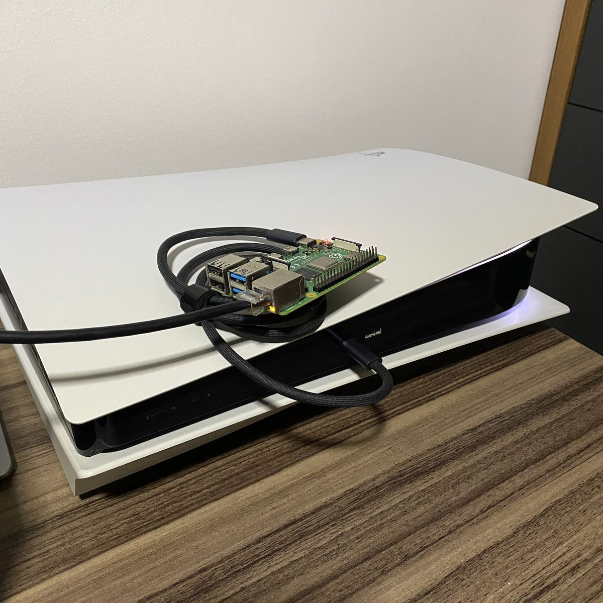
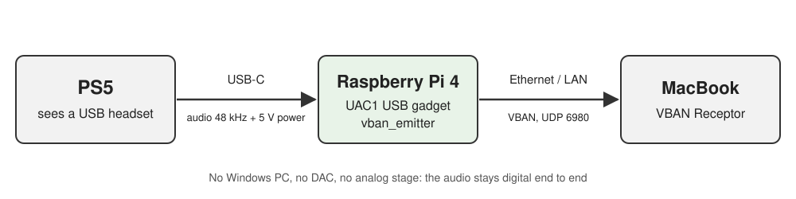

A Raspberry Pi that pretends to be a USB headset, so the game audio reaches a MacBook over the network
Published on October 9, 2026

The whole setup: a Raspberry Pi 4 on top of the PS5, one USB-C cable to the console's front port (audio and power) and one Ethernet cable.
I wanted the PS5's audio on my MacBook Pro. That sounds trivial until you list the console's audio outputs: HDMI, USB (only to a device that accepts digital audio) and the 3.5 mm jack on the controller. The MacBook's own jack does take an input, but it is a mono headset mic, so it is no use for stereo game audio.
The setup that worked until now had four steps: a Fosi Audio K7 DAC on the PS5's USB port, its RCA output into the line-in of my Windows desktop, Voicemeeter sending that over the network with VBAN, and the VBAN Receptor app playing it on the Mac. It works, but it keeps an entire desktop turned on just to move audio from one side of the room to the other, and it converts the signal from digital to analog and back on the way.
The question was whether a Raspberry Pi could replace the desktop, using only what was already in my office: a few Pis, from a Pi 1 B up to a Pi 4. No capture card, no new cable, no extra power supply.
pieces of hardware bought: only a Pi 4, an SD card and cables I already had
16-bit stereo, digital from the PS5 all the way to the Mac
VBAN packets per second on the network (48,000 samples / 256 per packet)
for the audio to come back after the PS5 wakes from rest mode, with no manual step
A Pi has no analog audio input and its HDMI ports are output only, so the K7's RCA output had nowhere to go. That left only one digital way in: the PS5's own USB port. If the Pi could present itself to the console as a USB sound card, the PS5 would send the audio straight to it, with no DAC and no analog stage.
Linux can do that with the USB gadget framework, which lets a board act as a USB device instead of a host. The hardware has to support it, though, and that ruled out every Pi but one. On the Pi 1, 2 and 3 model B, the only USB controller sits behind the onboard hub. On the Pi 4, the USB-C port (the one normally used for power) is wired to a controller that can work in device mode.
The second piece of information came from the K7 itself: it only works on
the PS5 when switched to USB Audio Class 1.0 (UAC1). The PS5 apparently ignores
UAC2 devices, which is a problem because Linux's ready-made audio gadget, g_audio,
defaults to UAC2. The way around it is to build the gadget by hand through
configfs with the uac1 function, and the stock Raspberry Pi kernel
already ships with it enabled (CONFIG_USB_CONFIGFS_F_UAC1=y), so there was nothing
to recompile.

The new chain: the PS5 thinks it is talking to a headset, and the Pi forwards everything to the Mac over the LAN.
vban_emitter, from the open-source
quiniouben/vban tools. It reads the gadget as
an ordinary ALSA capture card and sends VBAN packets to the Mac, so the VBAN Receptor that
used to listen to the Windows desktop keeps working with no changes other than the source.<mac>.local) and resolves it again every 30 seconds. If the Mac gets a new
address from DHCP, the emitter restarts towards it on its own. I tested this by faking an
address change, and the stream followed it in about 18 seconds.cloud-init files on the SD card's boot partition: user, SSH key, packages, the
vban build and two systemd services. Wi-Fi and Bluetooth are turned off to save
power, so the Pi uses Ethernet.vcgencmd get_throttled stayed at 0x0), even while it was compiling
vban on first boot.A charge-only cable. The first boot looked fine: the Pi
was powered, the gadget was registered, the services were up. But the controller reported
not attached and the kernel never logged a single connection from the host. The
PS5 was powering the Pi without ever talking to it. Swapping the USB-C cable for one that
carries data fixed it: configured, high-speed, address assigned.
A flag that looks like something else. In
vban_emitter, -c is not the number of channels. It is a
channel selection list, so -c2 would quietly send only channel 2, in mono.
The channel count is -n, and the default sample rate is 44.1 kHz, so
-r 48000 has to be explicit. Reading the README before writing the service caught
this before it reached the Mac.
Perfect silence. With the USB link up, the capture was running and the Pi was sending its 188 packets per second, yet a three-second recording was exactly zero on both channels. The PS5 was not sending its audio to the USB device yet, and adjusting the console's audio output fixed it. Two settings matter here: the USB device has to be the selected output, and Output to Headphones has to be All Audio, otherwise only voice chat goes to the headset.
Rest mode turns the Pi off. Twice. This was the most interesting finding. Even with Supply Power to USB Ports set to Always in rest mode, the PS5 cuts power to the front USB-C port for an instant when it enters rest mode and again when it wakes up. I timed a full cycle with the Pi being monitored every two seconds:
| Moment | What happened to the Pi |
|---|---|
| PS5 starts going into rest mode | stops receiving audio; ~40 s later it loses power, before the orange LED goes solid |
| PS5 in rest mode | power comes back, it boots, the USB data link stays down (not attached) |
| PS5 wakes up | loses power again within 4 s |
| ~35 s after waking | booted, gadget configured, audio playing on the Mac |
From the user's point of view it just works, since the audio comes back by itself. The cost is two abrupt power cuts per rest cycle, every day, on an SD card. The fix was to make the system read-only: the root filesystem now runs on overlayfs (writes go to RAM and vanish on reboot) and the boot partition is mounted read-only. Afterwards I measured the card's write counters: zero writes during operation. Pulling the USB cable out in the middle of playback became a non-event: the Pi was back and playing about half a minute after the cable went back in.
With the overlay active, every boot logs
EXT4-fs (mmcblk0p2): orphan cleanup on readonly fs and the kernel writes about
8 KB to the card while mounting it. I tried the obvious fix (one clean boot with the overlay
off so the cleanup gets committed, then the overlay back on) and the message survived. The
orphan file is empty, the superblock has no orphan list and a read-only e2fsck
finds nothing wrong. I don't know why the kernel still takes that path. Since it amounts to
8 KB, journaled, in the first seconds of boot, I left it as a known cosmetic issue.
I also did not measure the latency, so there is no number for it here. If lip sync matters for what you play, measure it on your own network before relying on it.
You need: a Raspberry Pi 4 (it has to be the Pi 4, because of the USB-C device mode), a USB-C cable that carries data, an Ethernet cable, an SD card and VBAN Receptor (or Voicemeeter) on the receiving computer.
1. Put the USB-C port in device mode, in
/boot/firmware/config.txt:
[all] dtoverlay=dwc2,dr_mode=peripheral # optional: saves power when the Pi runs on the console's USB dtoverlay=disable-wifi dtoverlay=disable-bt
2. Create the UAC1 gadget through configfs (as root, on
every boot; I run it from a oneshot systemd service after
sys-kernel-config.mount):
modprobe libcomposite G=/sys/kernel/config/usb_gadget/ps5audio mkdir -p $G && cd $G echo 0x1d6b > idVendor # Linux Foundation echo 0x0104 > idProduct # Multifunction Composite Gadget echo 0x0200 > bcdUSB mkdir -p strings/0x409 configs/c.1/strings/0x409 echo "PS5 Audio Bridge" > strings/0x409/product echo "UAC1" > configs/c.1/strings/0x409/configuration mkdir -p functions/uac1.usb0 echo 3 > functions/uac1.usb0/c_chmask # stereo, host -> Pi echo 48000 > functions/uac1.usb0/c_srate echo 2 > functions/uac1.usb0/c_ssize # 16 bits echo 0 > functions/uac1.usb0/p_chmask # no microphone, like the K7 ln -s functions/uac1.usb0 configs/c.1/ ls /sys/class/udc > UDC
3. Build vban and send the stream. The gadget
shows up as the ALSA card UAC1Gadget:
sudo apt install git build-essential autoconf automake pkgconf libasound2-dev git clone https://github.com/quiniouben/vban && cd vban ./autogen.sh && ./configure --disable-pulseaudio --disable-jack && make sudo install -m 0755 src/vban_emitter /usr/local/bin/ vban_emitter -i <mac-ip> -p 6980 -s PS5 \ -d hw:CARD=UAC1Gadget,DEV=0 -r 48000 -n 2
Without a host, or while the PS5 is not sending audio, the capture fails
with Input/output error and the emitter exits. In the systemd service, use
Restart=always and StartLimitIntervalSec=0 so it never gives up. To
follow the Mac by name, wrap the command in a script that resolves
<mac>.local with getent ahostsv4 and restarts the emitter when
the address changes.
4. On the PS5: plug the Pi into the front USB-C port, then go to Settings → Sound → Audio Output, pick the USB device and set Output to Headphones to All Audio.
5. On the Mac: in VBAN Receptor, select the
PS5 stream, port 6980. The app pins the stream to the Pi's IP, so if the Pi's
address changes, select the stream again.
6. When everything works, protect the card:
sudo raspi-config nonint enable_bootro # boot partition read-only (do this first) sudo raspi-config nonint enable_overlayfs # root on overlayfs sudo reboot
When something fails, three readings point to the culprit:
| Check | Expected | If not |
|---|---|---|
cat /sys/class/udc/*/state |
configured |
not attached: cable without data, or the PS5 is in rest mode |
/proc/asound/UAC1Gadget/pcm0c/sub0/status |
state: RUNNING |
closed: the PS5 is not sending audio to the USB device |
tx_packets of eth0 over 5 s |
~188 per second | emitter stopped: journalctl -u <service> |
g_audio (UAC2)
would have been the first attempt, and the PS5 would have ignored it.c_*/p_* attributes: docs.kernel.org/usb/gadget-testing.htmlconfig.txt and overlays: raspberrypi.com/documentation/computers/config_txt.htmlA note on how this was built: the investigation and the implementation were done in pair with Claude Code (Anthropic's AI coding agent), which researched the hardware limits, prepared the SD card image, configured the Pi over SSH and ran the measurements above. The goal, the decisions and the physical tests (cables, the console, the rest mode cycles) are mine. The text was also drafted with Claude, from the real session history.